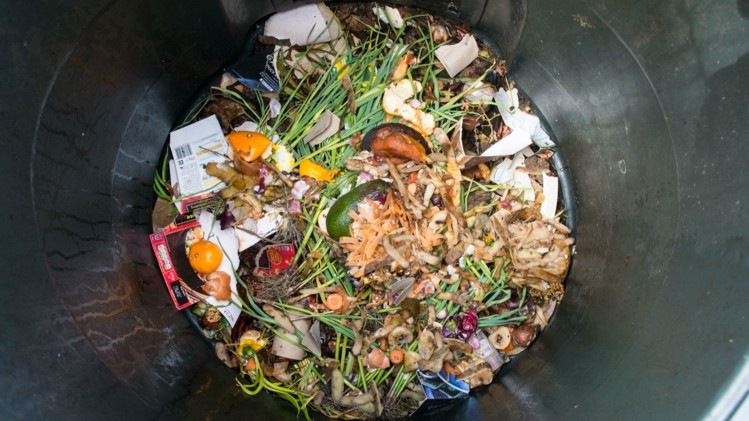

You picked up the latest edition of the newspaper
After the pandemic-driven recession in 2020, the island (i.e., the Philippines) is still experiencing economic and food crisis.

Agriculture plays a huge role in the lives of Filipinos. However, our nation still struggles when it comes to food security. Shortage of food supply coming from the agricultural sector is common. Leading causes are rampant hoarding, inadequate government policies, and unforeseen natural crises. In 2023, to combat increasing price of rice, President Marcos declared price ceiling to rice products fueling economic insecurity of farmers. Subsequently, this policy adds pressure in producing food crops and in selling them in the market.
In line with this, cases of vegetables, such as cabbages, being wasted or sold at a loss due to oversupply in the food supply chain increases. This is food that could be bought by the government and reallocated to starving families.
With the ever increasing population growth and unpredictable crises, the capacity to produce food for the population is hampered. Sustainable agriculture and food production is needed now more than ever.
You started forming hypotheses and potential solution
This is to answer the elusive question:
How do market conditions correlate with food crops productivity?
NULL HYPOTHESIS: Economic factors does not have any correlation with food crop productivity in the several regions of the country
ALTERNATIVE HYPOTHESIS: Food crops production in the country are correlated by some economic factors
ACTION PLAN: Analyze and interpret several economic factors and their relation to different food crops production. Additionally, formulate models for important agricultural indicators.
You left the store to continue your journey.
Press the exit button to continue with your journey.